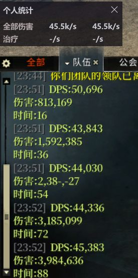
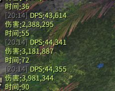
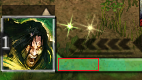
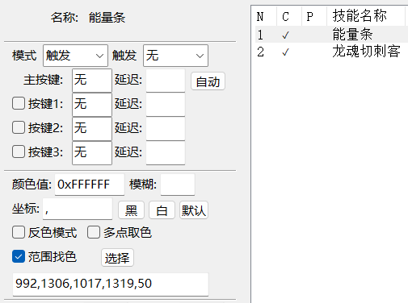
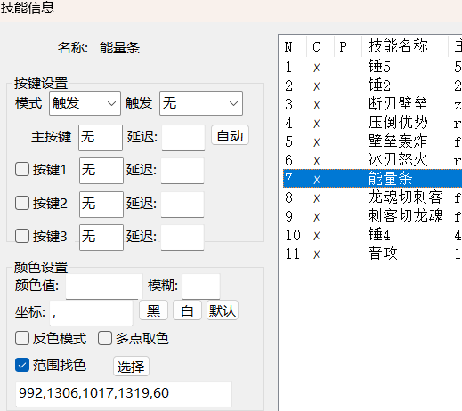

单大锤龙魂 超大体型45k 标灌+普通食物&扳手 7-23优化循环版
锤5，锤2，冰刃怒火|压倒优势，锤2=锤5，锤2，壁垒轰炸，冰刃怒火，能量条=龙魂切刺客，能量条=刺客切龙魂，锤4，普攻||
锤5,5,400,2,200|锤2,2,650|冰刃怒火,r,650|压倒优势,r,1|壁垒轰炸,f3,750|能量条,,,,,,,,,,,,,1,992,1306,1017,1319,60|龙魂切刺客,f1,150,r,50|刺客切龙魂,f1,150|锤4,4,650|普攻,1,1
[&DQkPKgMuPyrcEdwRBhIrEtQRBhIrEtQRyhHKEQUCAgArEgYS1BEAAAAAAAABMwAA]
原理：大锤2有三段1200码，离巨型怪大概3个身位，大概240码，卡好位置， 能让它吃多次伤害，比如8x的3个王，李部长和丰收神殿。
小细节：大锤5击中能充能大锤2，如果大锤2快好了，可以等它好，再锤5过程中放锤2。
能量条取色：范围取色 大概能量条的10% 右键框选 ，颜色值 复制黏贴 这个白色代码 0xFFFFFF ， 范围找色数值最后的 0 改成50（模糊度）。
龙魂切刺客取色：取色F1右边 龙魂使 ， 如果不切 姿态， 检查下能量条取色 如果宏启动后， 中间普攻时间较长，检查下延迟比较久的技能取色是否在技能框11点，比如 F3的 壁垒轰炸。
欢迎交流。
7-23更新 删了治疗技能，改了下延迟 ， 全局0.95，能打到45.5k了

评论列表（30）
龙魂姿态 放完冰刃怒火和锤4 刚好卡在10能量不切姿态，多打了好多平a
标灌跟标准食物扳手2断伤害都有，42K
@小o

有人试过吗，标灌跟扳手能上45K吗
我标灌起手有43k，后续很拉胯才35k，是哪出了问题，也是巨型体，站在大概红圈内线的位置
@666 。。圈外吧。。其实先打个2技能看有没2次伤害就知道了。
锤2为什么设置了内置cd还是好了就秒放？
@小o 本来想试试新写法 锤2小于1秒cd 就等等锤5好了再一起放，没赋值，其实没起作用，锤2=锤5 效果实际也差不多
取范围能量感觉还不如取F2技能的颜色反色，，F2少于10点能量就会变黑！！
@钟神秀 思路可以
大佬能量取色带能量还是不带
@圣光 带不带无所谓， 取色是 白色 复制下颜色代码黏贴上去， 范围取色 点了 后 右键框选 能量条10%的范围就行，范围数值比如992,1286,6542,2965,0 这个最后的0改成50，也就是模糊度50
@奶嘴family 谢谢大佬
@奶嘴family 意思是直接添代码可以免取色是么,
@奶嘴family 还是要取色,我不切姿态,不知道什么原因
@圣光 按照图来就行，用范围找色，然后点击那个白色按钮，另外一个刺客切龙魂，就取当前刺客的时候的刺客图标。


@melis 明白了大佬
可以，超大体 0灌注40k，中小体35k.。- -伤害吃不满，大佬666
@不落地的枫叶 大佬,能量那边怎么取色,要空白的还是满的能量条
@圣光 框选能量条10%的区域，从0%到10%的那个区间，然后点击最新版按钮的白色按钮，保存，表示区域内如果无能量，模糊度可以改成15.
@melis 明白
了
@melis 明白了
导入网页数据后，能量条,,,,,,,,,,,,,1,992,1306,1017,1319,60 这里为啥取色的时候没有跟随按键，但是确有延迟呢呢？
@不落地的枫叶 这是范围找色，那是xy坐标

@melis 懂了，我用1.77B6导入有的问题，最新的没有，大佬666
大佬 请问刺客切龙魂和龙魂切刺客是取F1左边的吗？
@小龙龙 都是右边的
@奶嘴family 就是判断是不是 在龙魂或者刺客 姿态下 ，能量条件只要能量见底了 就会切
大佬666，就等这个大锤了。昨天大团看到有人用，输出很稳定很高